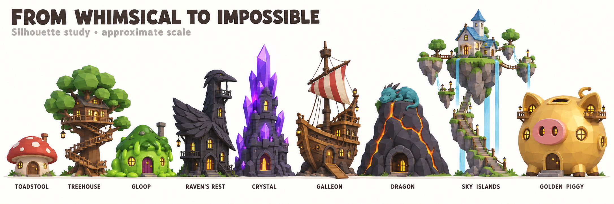
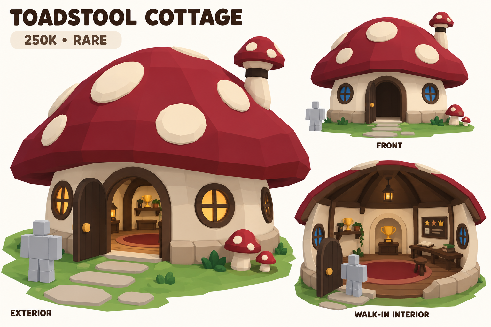
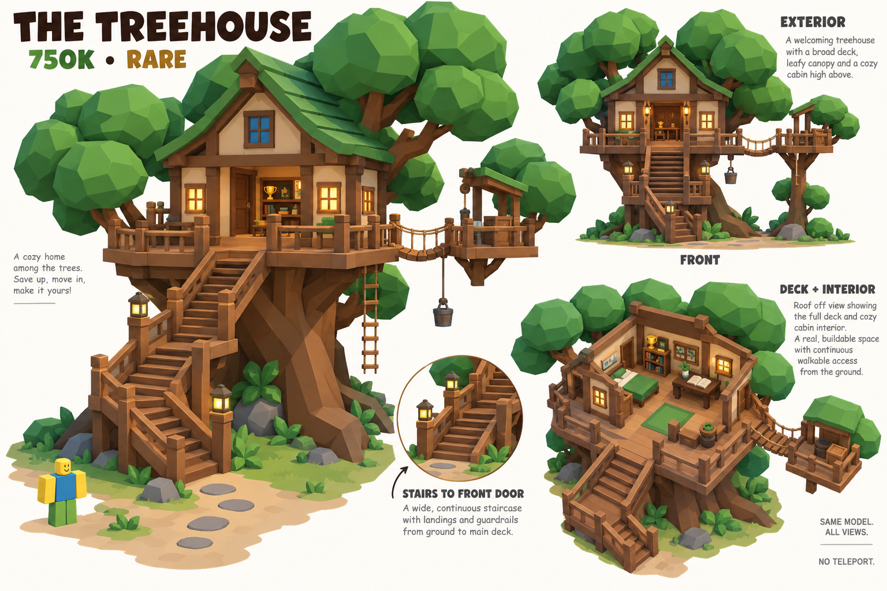
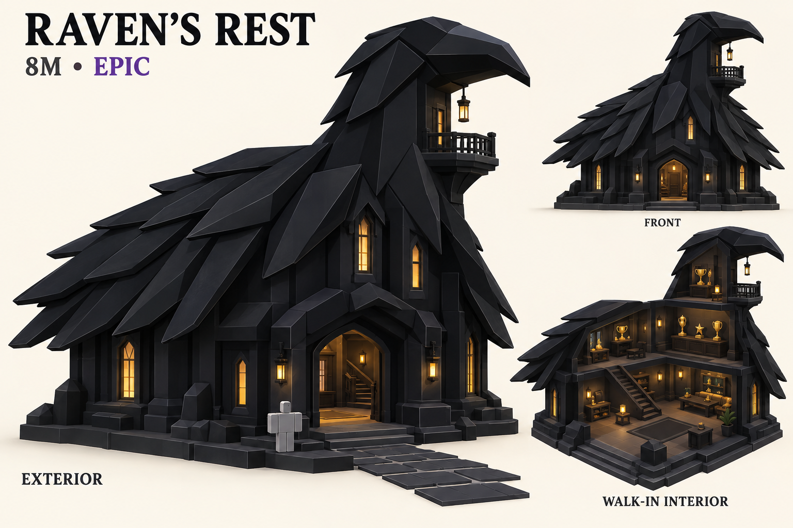
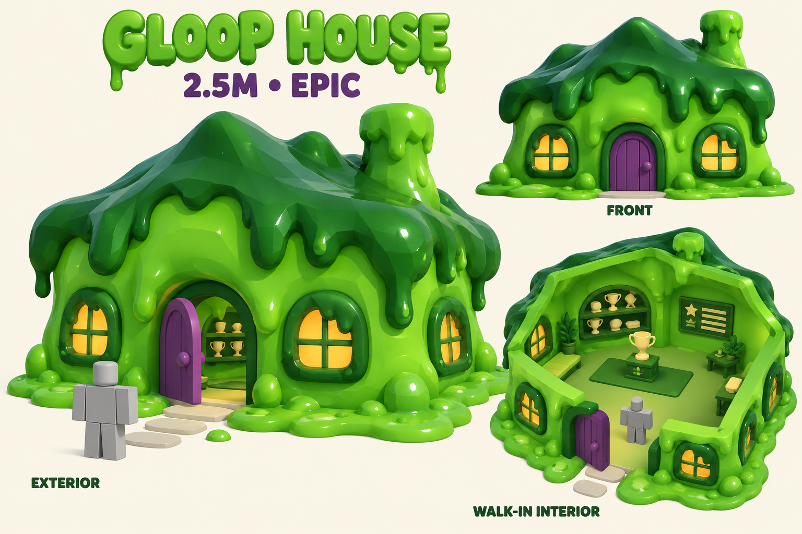

Superseded in part: Open the latest six-house concepts and Legendary animation study. Raven, dragon, sky islands and the 1B Golden Piggy purchase have been replaced by the new brief.
Phase 4b · Fantasy direction · First concept pass
Climbing out of the ordinary.
Nine unmistakable shapes, from a modest toadstool to a colossal golden piggy bank. The new brief preserves the prices and ownership IDs of existing houses, and replaces the nine proposed realistic additions. Gingerbread is now reserved for seasonal content; Raven’s Rest is the proposed all-black replacement at 8M.
Real doors. Real rooms. Houses remain part of the shared street. Their interior size and condition progress with the house; stairs connect accessible floors. The older separate-room wording has not been adopted.

First build candidates · 250K and 750K
Start small, then climb.
{kind=link}

One cozy room inside the stalk, framed round openings and raised cap spots. Simple ground-level access.
{kind=link}

A timber cabin and display deck within one oak. Main access uses stairs; the rope ladder is a decorative detail.
User revision · More slime, no seasonal gingerbread
Black feathers and green gloop.
{kind=link}

Charcoal walls, folded-wing roof and a raven-shaped tower. Gingerbread is seasonal; the proposed raven ID needs registry alignment.
{kind=link}

Green inside and out, bulging goo corners and chunky slime window frames. A flat walking floor keeps the interior usable.
The full ladder
All bounds and floor counts are design targets. Width and depth must include canopy, bridges and access structures. Measured part counts and footprint checks are pending.
| House / stable ID | Price / rarity | Target W × D × H (studs) | Physical access |
|---|---|---|---|
mushroomToadstool Cottage | 250,000 Rare | 26 × 24 × 14 1 accessible floor(s) | Ground-level round doorway. |
treehouseThe Treehouse | 750,000 Rare | 38 × 34 × 30 1 accessible floor(s) | Continuous guarded stairs to the deck; rope ladder is decorative. |
slimeGloop House | 2,500,000 Epic | 34 × 30 × 18 1 accessible floor(s) | Fixed plum doorway and dry floor; goo stays outside the route. |
ravenRaven’s Rest | 8,000,000 Epic | 38 × 32 × 26 2 accessible floor(s) | Ground-level arched door and interior dogleg stair inside the broad body. |
crystalCrystal Spire | 25,000,000 Legendary | 38 × 34 × 45 2 accessible floor(s) | Door in rock base; stair within the central volume. |
galleonThe Beached Galleon | 150,000,000 Legendary | 48 × 48 × 50 2 accessible floor(s) | Front gangplank to deck and broad companionway into cabin. |
dragonDragon's Roost | 300,000,000 Legendary | 48 × 44 × 40 2 accessible floor(s) | Cave door with clear route past gold piles; internal stair. |
skyislandSky Islands | 600,000,000 Legendary | 54 × 50 × 55 2 accessible floor(s) | Stationary stair route from ground, then guarded bridges. |
goldenpigThe Golden Piggy | 1,000,000,000 Legendary | 56 × 44 × 40 2 accessible floor(s) | Belly door and internal stairs to ear balconies; coin-slot skylight. |